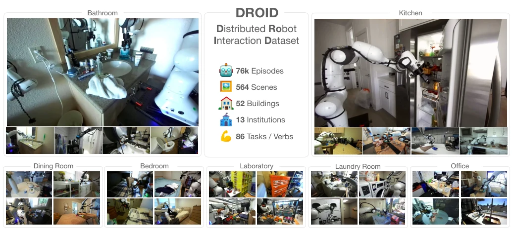
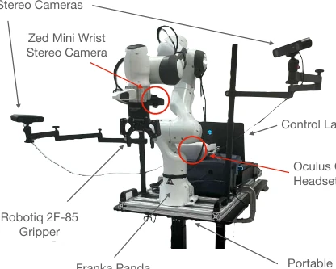
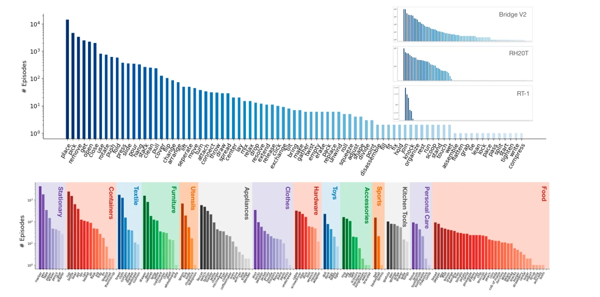
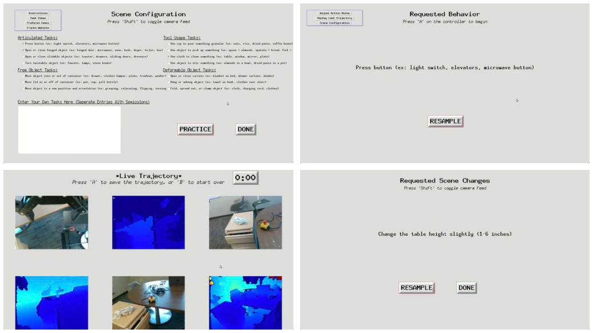
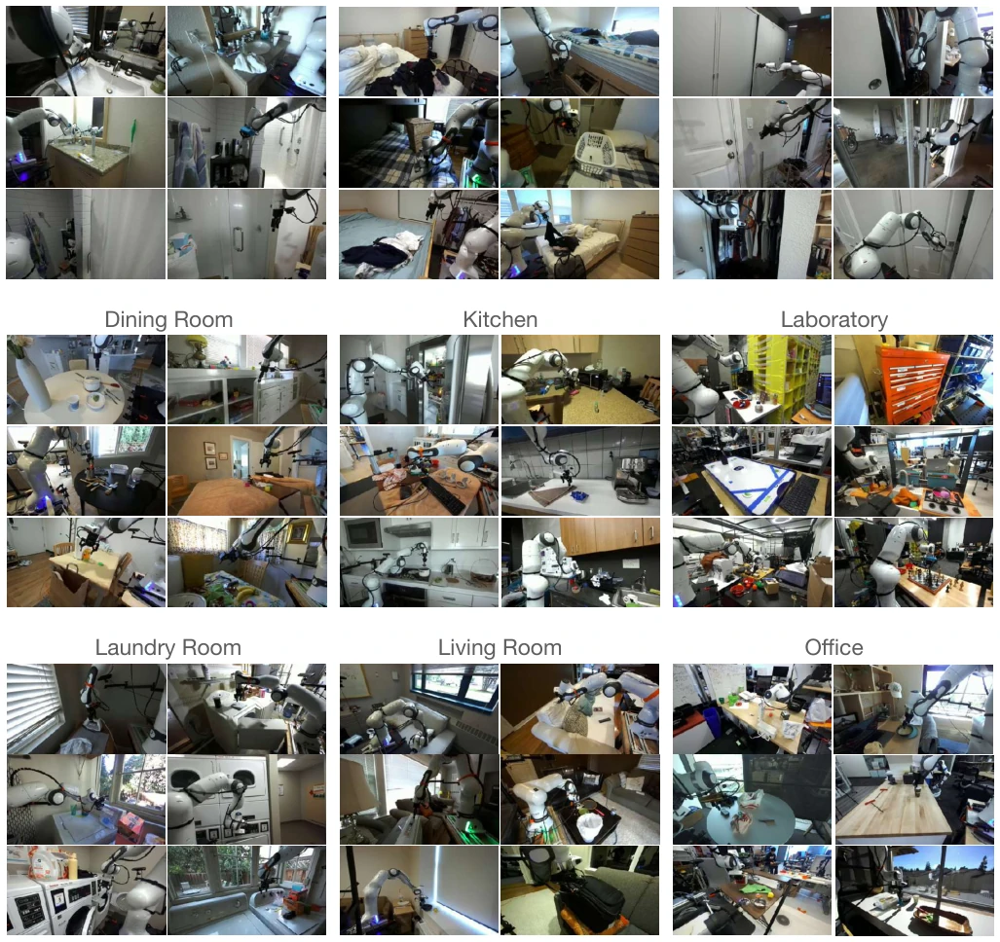
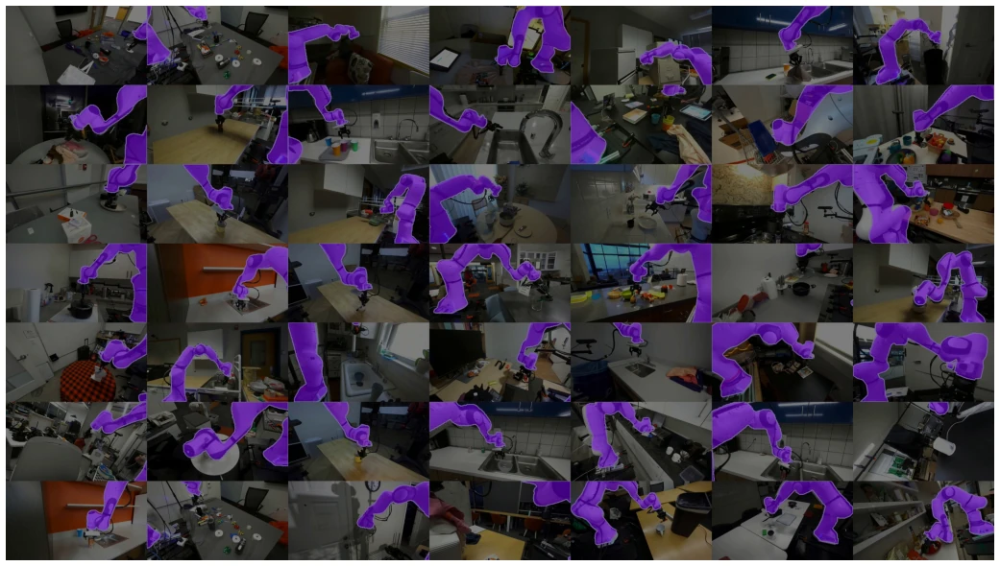
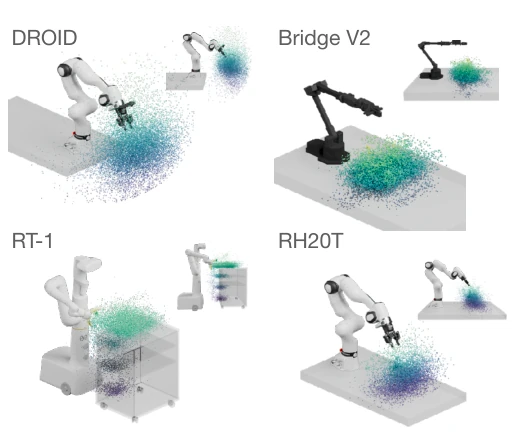
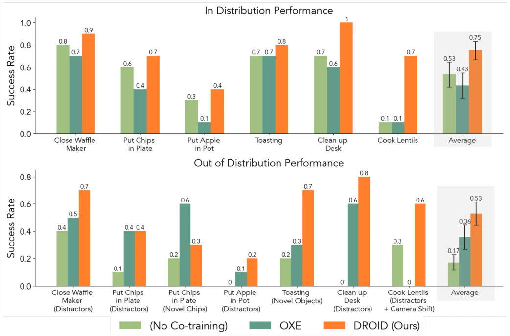
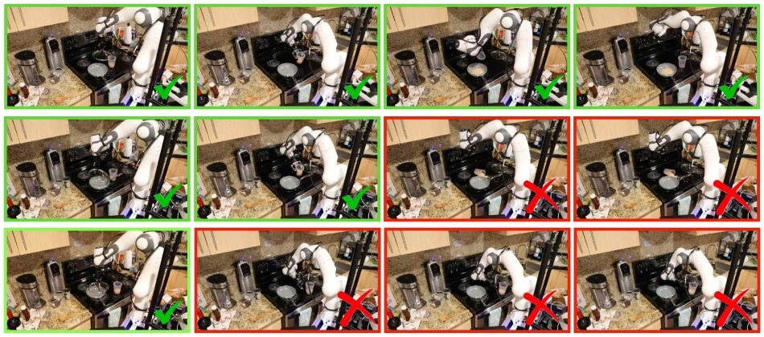
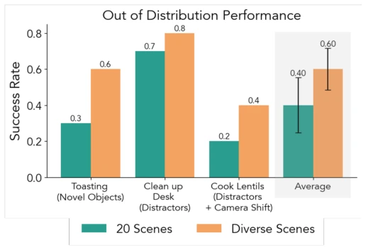

The name DROID is quite grand; the data volume is indeed staggering, comprising 76k trajectories and 564 scenes, more than double the 300 scenes of OXE [39]. However, do not rush to acclaim; this dataset is fundamentally constructed through human teleoperation (teleop), with the hardware stack locked to Franka + Oculus, meaning ordinary laboratories wishing to replicate it must first acquire a full set. Although claimed to be 'in-the-wild', it is actually supervised by humans, not fully autonomous. Nevertheless, the open-source hardware guide and pre-trained models are commendable, effectively providing a ladder to the community. However, with 50 collectors spread globally, data consistency relies heavily on protocols, and it is uncertain whether it will collapse in new environments. For researchers pursuing generalization, this data is a goldmine, but the migration cost is substantial, and reliance on specific hardware stacks limits some flexibility.
The pain point of embodied intelligence lies in generalization. Existing large models such as RT-1 [2] and Bridge V2 [13], while large, have scenarios that are too concentrated, mostly within laboratories or single buildings. OXE [39] aggregates multiple datasets, but scenario diversity remains insufficient (approximately 300). Unlike autonomous driving [4], robot manipulation cannot directly crawl the web; data collection costs are high. The lack of real-world diversity leads to policy collapse in OOD environments. DROID attempts to address the single-scenario problem through distributed collection, filling the void in large-scale real-scenario data. It demonstrates that cross-institutional collaboration can overcome the limitations of single-point collection, providing richer training corpora for general robot policies, representing an important step towards general robot manipulation.

Fig. 1: We introduce DROID (Distributed Robot Interaction Dataset), an “in-the-wild” robot manipulation dataset with 76k trajectories or 350 hours of interaction data, collected across 564 scenes, 86 tasks, and 52 buildings over the course of 12 months. Each DROID episode contains three synchronized RGB camera streams, camera calibration, depth information, and natural language instructions. We demonstrate that training with DROID leads to policies with higher performance, greater robustness, and improved generalization ability. We open source the full dataset, pre-trained model checkpoints, and a detailed guide for reproducing our robot setup.
The core lies in standardized hardware and protocols. Hardware uniformly employs Franka Panda manipulators, Robotiq grippers, Zed cameras, and Quest 2 controllers, mounted on portable lift tables for easy transport. The collection protocol mandates random task sampling to avoid recording only simple actions, and incorporates scene perturbations (such as lighting and object positions). Data includes three-view RGB, depth, calibration parameters, and natural language instructions. Subsequently, language instructions are crowdsourced for labeling, and camera extrinsic calibration is optimized. Policy training adopts Diffusion Policy [7], with inputs of vision, language, and proprioception, outputting action sequences. The entire process emphasizes reproducibility, providing detailed hardware guides to ensure different laboratories can construct consistent environments. Furthermore, the system supports a 15Hz control frequency, recording actions in both joint space and end-effector space, ensuring a unified data format conducive to subsequent model training.

Fig. 2: The DROID robot platform. We use the same hardware setup across all 13 institutions to streamline data collection while maximizing portability and flexibility. The setup consists of a Franka Panda 7DoF robot arm, two adjustable Zed 2 stereo cameras, a wrist- mounted Zed Mini stereo camera, and an Oculus Quest 2 headset with controllers for teleoperation. Everything is mounted on a portable, height-adjustable desk for quick scene changes.

Fig. 3: Distribution of verbs and objects in DROID. Top: Distribution of verbs after de-duplication with GPT-4. DROID has a long tail of diverse tasks that span a wide range of behaviors. We also visualize the verb distributions for existing large manipulation datasets and find that only Bridge V2 [59] has a comparable long tail of skills (for a detailed view of verb distributions for all datasets, see Appendix, Fig. 18). Bottom: Distribution of objects the robot interacts with in DROID, sorted by category (best viewed zoomed in; for a detailed view, see Fig. 19).
Tested on 6 tasks (such as cooking lentils, organizing desks), comparing against no collaborative training and OXE [39] collaborative training. The metric is success rate. DROID collaborative training improved by 22% in-distribution and 17% OOD. Ablation experiments show that using only a subset of 20 scenes performs worse than the full diverse scenes, proving that scene diversity is key. Qualitatively, DROID policy actions are smoother, and long-horizon task completion is higher. Experiments covered laboratory, office, and real home environments, verifying cross-scenario generalization capabilities. This indicates that data quality and diversity are more important than sheer quantity, providing a strong baseline for subsequent policy learning, and also suggests that future data collection should focus more on scene coverage rather than single task repetition.

Fig. 11: DROID data collection GUI. Top left: Screen for entering feasible tasks for the current scene. Tasks can either be selected from a list of suggestions or typed as free-form instructions. Top right: Instruction screen – the GUI samples a task at random from the entered list of feasible tasks and instructs the data collector to record a demonstration trajectory. This ensures wide coverage of possible tasks in each scene and avoids bias towards easy or familiar tasks. Bottom left: Data collection screen – displays RGB and depth camera live streams. Bottom right: The GUI periodically suggests scene changes between demonstration collections to ensure high scene diversity.

Fig. 12: Qualitative examples of scenes in DROID. We use GPT-4V to categorize scenes into 9 scene types. DROID contains robot manipulation demonstrations in a wide range of “in-the-wild” scenes across 52 buildings. Please check out the interactive dataset viewer included in the supplementary material to browse the dataset videos.

Fig. 13: Camera-to-robot base calibration qualitative results showing randomly picked scenes with synthetically rendered robot masks using PyTorch3D [44]. Renderings are generated by importing the robot’s URDF-defined mesh and kinematic structure, applying joint angles to compute the articulated pose, and transforming the mesh to the camera frame using the extrinsic Tcam→base. The extrinsic results are a combination of results from automatic quality assessment-based filtering, outlined in Sec. G-A and running a tuned CtRNet-X model [34], outlined in Sec. G-B. We provide quality assessment metrics for both approaches in our released extrinsic.
其他图片Other Figures

Fig. 6: Visualization of 3D interaction points relative to the robot base. We visualize the 3D location at which the gripper first closes in each trajectory, since closing the gripper often indicates meaningful object interactions. DROID’s interactions cover a larger part of the robot’s workspace, since the robot is moved freely between collection sessions instead of being placed in front of repetitive tabletop scenes.

Fig. 8: Does DROID Improve Policy Performance and Robustness? We find that across all our evaluation tasks, co-training with DROID significantly improves both in distribution and OOD performance over both no co-training and co-training with the Open-X dataset. We compare success rate averaged across all tasks with standard error, and find DROID outperforms the next best method by 22% absolute success rate in-distribution and by 17% out of distribution.

Fig. 9: Representative policy rollout examples on the most challenging “Cook Lentils” task in the kitchen of one of the authors. Qualitatively, we find that policies co-trained with DROID perform smoother, more precise motions, allowing them to solve long-horizon tasks like lentil cooking even in the presence of unseen distractor objects. In contrast, policies trained only with in-domain demonstrations or co-trained with Open-X data [39] struggle with long-horizon tasks and out-of-distribution evaluation settings. See https://droid-dataset.github.io for rollout videos.

Fig. 10: How important is the scene diversity in DROID? We find that co-training on a subset of DROID with diverse scenes has higher OOD performance than co-training on a subset of DROID with only 20 scenes, suggesting the scene diversity of DROID is one of the driving factors behind strong policy performance when co-training.